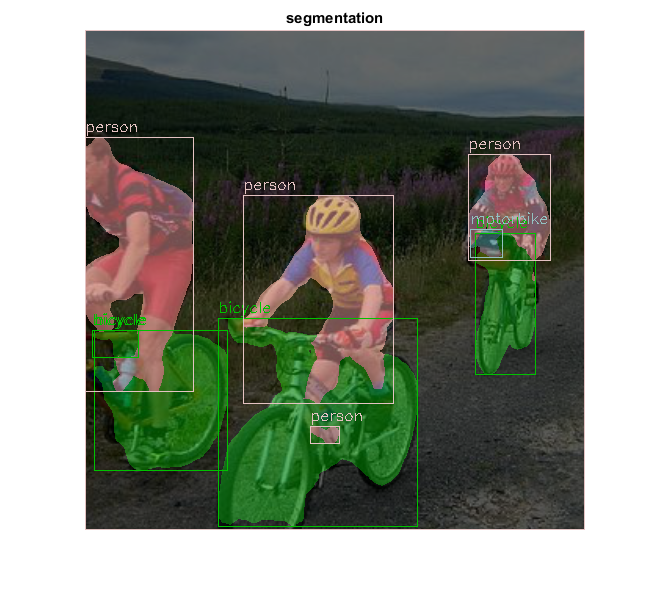
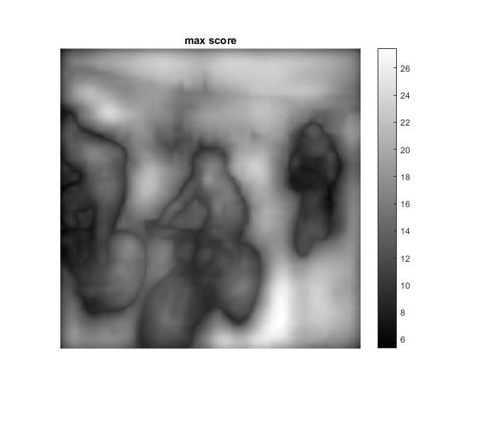

Fully-Convolutional Networks Semantic Segmentation Demo
"Fully Convolutional Models for Semantic Segmentation", Jonathan Long, Evan Shelhamer and Trevor Darrell, CVPR, 2015. http://www.cv-foundation.org/openaccess/content_cvpr_2015/papers/Long_Fully_Convolutional_Networks_2015_CVPR_paper.pdf
Sources:
Contents
Model files
dirDNN = fullfile(mexopencv.root(), 'test', 'dnn', 'FCN'); modelLabels = fullfile(dirDNN, 'pascal-classes.txt'); modelTxt = fullfile(dirDNN, 'fcn8s-heavy-pascal.prototxt'); modelBin = fullfile(dirDNN, 'fcn8s-heavy-pascal.caffemodel'); % 513 MB file files = {modelLabels, modelTxt, modelBin}; urls = { 'https://cdn.rawgit.com/opencv/opencv/3.4.0/samples/data/dnn/pascal-classes.txt'; 'https://cdn.rawgit.com/opencv/opencv/3.4.0/samples/data/dnn/fcn8s-heavy-pascal.prototxt'; 'http://dl.caffe.berkeleyvision.org/fcn8s-heavy-pascal.caffemodel'; }; if ~isdir(dirDNN), mkdir(dirDNN); end for i=1:numel(files) if exist(files{i}, 'file') ~= 2 disp('Downloading...') if i==3 choice = questdlg({'Downloading a large Caffe model (513 MB).', ... 'Continue?'}, 'Download', 'OK', 'Cancel', 'OK'); assert(strcmp(choice, 'OK'), 'Download cancelled'); end urlwrite(urls{i}, files{i}); end end
Load classes and their colors
fid = fopen(modelLabels, 'rt'); C = textscan(fid, '%s %d %d %d', 'CollectOutput',true); fclose(fid); labels = C{1}; % (20 classes + background) colors = uint8(C{2}); % 21x3 fprintf('%d classes\n', numel(labels));
21 classes
Create and initialize network from Caffe model
net = cv.Net('Caffe', modelTxt, modelBin); assert(~net.empty(), 'Cant load network');
Prepare blob
Set the network input (VOC-FCN8s was trained on 500x500 BGR-images)
crop = true; img = cv.imread(fullfile(mexopencv.root(), 'test', 'rgb.jpg'), ... 'Color',true, 'FlipChannels',false); blob = cv.Net.blobFromImages(img, 'Size',[500 500], ... 'Mean',[104.00699, 116.66877, 122.67892], 'SwapRB',false, 'Crop',crop); net.setInput(blob, 'data');
Make forward pass
computes output
tic score = net.forward('score'); % 1x21x500x500 toc
Elapsed time is 5.771725 seconds.
Gather output
score = permute(score, [3 4 2 1]); % num,cn,row,col -> row,col,cn,num % max scores and corresponding labels [S,L] = max(score, [], 3); % score is 500x500x21
Result
% prepare output image if crop if true % recover image from blob as fed to network rgb = permute(blob, [3 4 2 1]); rgb = bsxfun(@plus, rgb, cat(3, 104.00699, 116.66877, 122.67892)); rgb = uint8(round(rgb)); else % take input image and do center-crop + resize ourselves sz = [size(img,2) size(img,1)]; rgb = cv.getRectSubPix(img, [min(sz) min(sz)], sz/2); rgb = cv.resize(rgb, [500 500]); end else % direct resize of original image rgb = cv.resize(img, [500 500]); end rgb = flip(rgb, 3); % BGR to RGB % colorize segmentations using label colors and overlay on top of image out = reshape(colors(L(:),:), [size(L) 3]); out = cv.addWeighted(rgb, 0.4, out, 0.6, 0.0); % highlight segmented objects for lbl=2:numel(labels) % skip 1 (background label) % regionprops BW = (L == lbl); if nnz(BW) == 0, continue; end [~,~,stats,centroids] = cv.connectedComponents(BW); % ignore small areas idx = stats(:,5) < 200; stats(idx,:) = []; centroids(idx,:) = []; % show bounding box around objects + show name str = labels{lbl}; clr = colors(lbl,:); clr = uint8(brighten(double(clr)/255, 0.6) * 255); for i=1:size(stats,1) bbox = double(stats(i,1:4)); out = cv.rectangle(out, bbox, 'Color',clr, 'Thickness',1); out = cv.putText(out, str, bbox(1:2)-[0 6], 'Color',clr, 'FontScale',0.5); end end % display figure, imshow(out), title('segmentation') figure, imshow(S,[]), title('max score'), colorbar